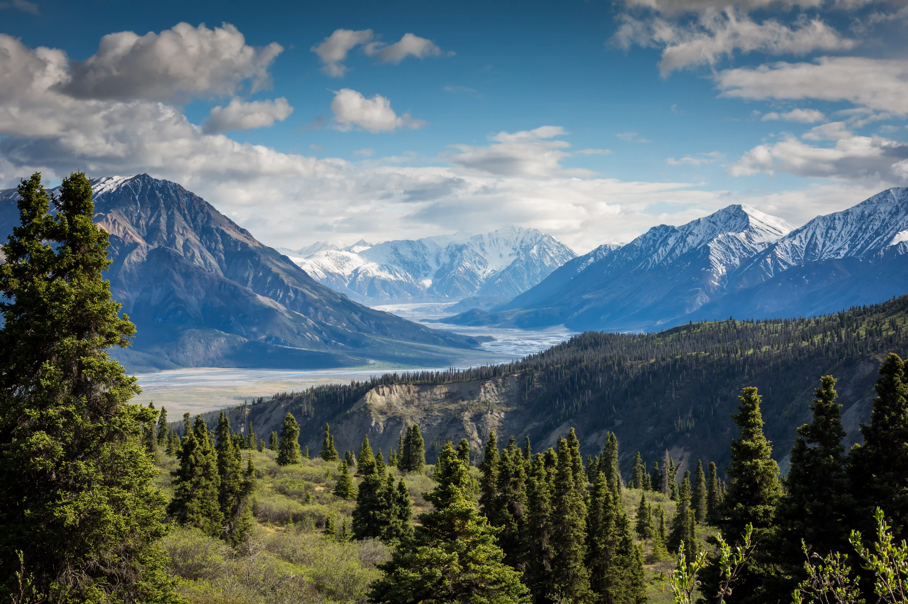
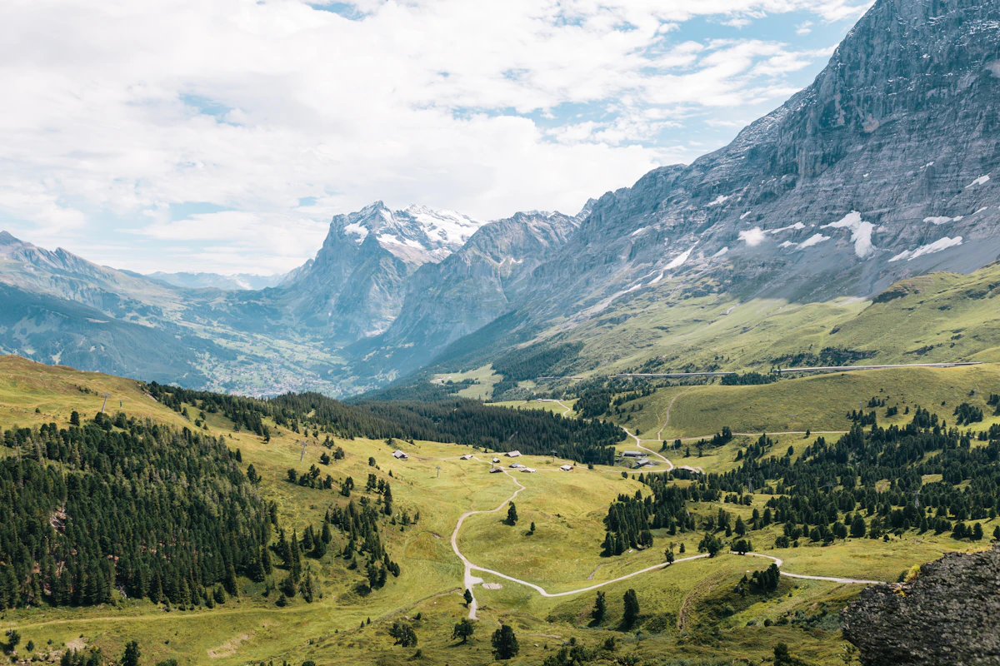
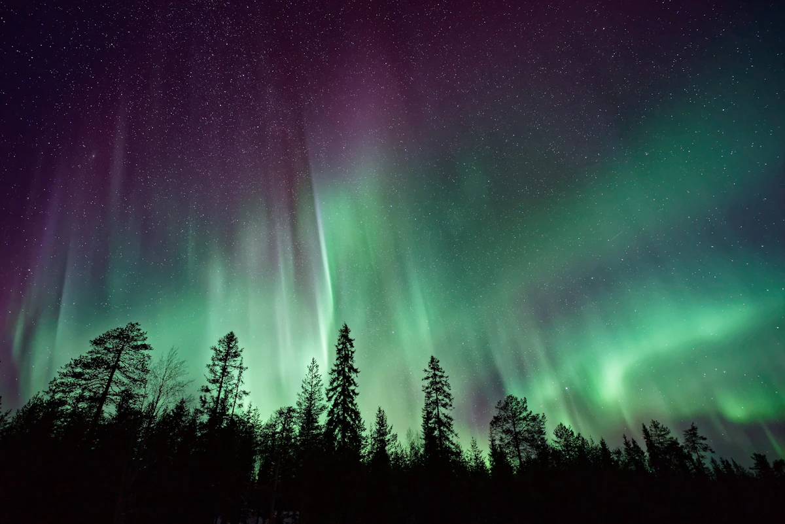

JanAprJulOctDec

Season 2026–27Arctic · Alpine · SubpolarMax 8 pax
Expedition-grade small group travel
去光還沒
抵達的地方。Beyond the last road.
極北探路只做八人以下的遠征。專業嚮導、實際的風險評估、沒有多餘行程。你只需要決定要去哪一條線。
−12°C
03h 42m
1,180m
14kt
Live feed · Abisko station—
三條遠征路線，
沒有一條是觀光巴士到得了的。
難度以五格標示。三級以上需要基礎雪地行走經驗，我們會在報名前先跟你確認。

Camp I · 1,180 m River crossing Camp II · 1,640 m
02 / Field notes
嚮導比路線重要。
嚮導比路線重要。
我們先告訴你誰會帶你走。
每一團由兩位嚮導帶隊：一位負責路線與天氣判斷，一位負責團員狀態。路線每天早上依實際風速、能見度與體力重新決定，行程表上寫的只是計畫。
2Guides / team
1 : 4Guide ratio
IFMGACertification
14 yrAvg. polar exp.
出發前你就會看到
我們看到的數據。
日照、極光機率、氣溫區間與席次都公開。你可以自己判斷這是不是你要的季節。
78%
十月至三月夜晚，晴天條件下觀測到極光的歷史比率。
−12 °C median
0102030405060708
剩餘 3 席。八人成團上限不會為了滿團而放寬。
ClosedOpenPeak aurora
把風險寫清楚，
比把風景寫漂亮重要。
以下是我們每一團都會執行的準則，報名時你會收到完整版。
每日 06:00 路線會議
依當日風速、能見度與雪況決定是否出發或改線。取消不補償行程，但會公開判斷依據。
- 風速 > 25 kt 停止移動
- 能見度 < 200 m 不離營
- 衛星電話每日兩次回報
裝備由我們檢查，不由你猜
出發前 30 天寄出裝備清單與租借選項。抵達當天逐件檢查，不合格的當場更換。
- 三層系統 · −35°C 等級
- 雪鞋、冰爪、頭燈備品
- 個人 GPS 信標
嚮導持野外急救證照
每團至少一位 WFR 持證嚮導，攜帶高山症與凍傷處置藥品，撤離路線在出發前就已規劃。
- WFR 80 小時野外急救
- 與當地救援單位有聯絡管道
- 建議投保含直升機救援
